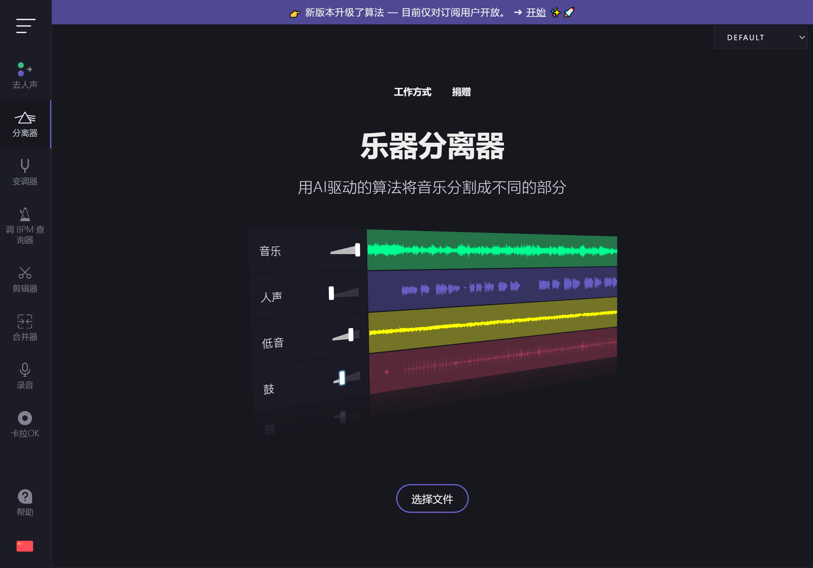
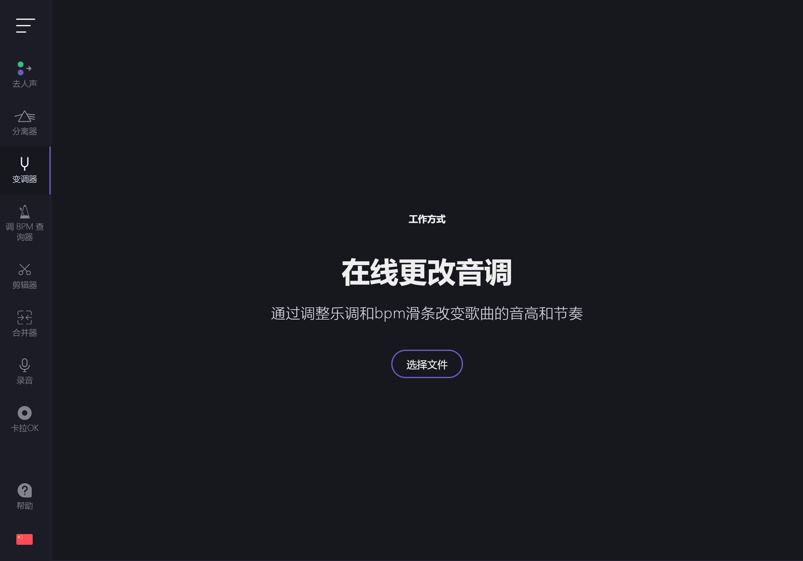

从一个去人声按钮到整条工具链——VocalRemover 的七年迭代逻辑
VocalRemover 刚上线时就是一个浏览器里的"去人声"按钮，七年过去，它长成了覆盖拆轨、变调、找调、剪辑的完整音频处理平台。我跟踪了它的几个关键版本，想聊聊这款工具到底在死磕什么。
现状：它现在是什么样
如果你今天去VocalRemover官网看看，首页会让你有点恍惚——这哪里是个"去人声工具"，分明是一整个浏览器端的音频工作站。顶部一排工具按钮：Remover（去人声）、Splitter AI（拆四轨）、Pitch（变调）、Key BPM Finder（找调找 BPM）、Cutter（剪辑）、Joiner（合并）、Voice Recorder（录音）、卡拉OK、Tap Tempo——数一下，九件工具，覆盖了从分析、处理到二次创作的完整链路。
最有意思的是它的核心数据模型。Splitter AI 不是简单地把人声和伴奏分开，它直接给你四条独立的轨：vocal、drums、bass、other。四条轨各自独立下载，想怎么拼怎么拼。我前阵子帮朋友做一个翻唱的伴奏替换，就是用它把原歌的人声轨抽出来，跟另一首歌的鼓轨拼在一起——全程没装任何桌面软件，浏览器标签页里就搞定了。

但真正让我觉得它变了的，不是工具数量，而是处理方式。它一直坚持浏览器本地处理——文件不上传服务器，WebAssembly 直接在你机器里跑。这个决定从第一天就没变过，但直到 Splitter AI 出来，大家才意识到这意味着什么：隐私安全是顺便的，真正的好处是没有队列、没有等待、处理完直接下载就行。
来路：从 MVP 到转折点
VocalRemover 的起点很低。公开资料里能找到的最早版本，界面上只有一个大按钮：Upload → Remove Vocals → Download。没有工具菜单，没有参数调节，没有账号体系——就是一个极简的去人声服务。我猜早期开发者的想法很简单：先把"能不能用"跑通，其他再说。
第一个关键转折点是 Remover 到 Splitter AI 的升级。原来的 Remover 只输出两轨（人声 + 伴奏），Splitter 直接拆成四轨（vocal + drums + bass + other）。这不是简单的"拆得更细"——两轨模型的"伴奏"是个黑箱，四轨模型让用户第一次能看清一首歌的编曲层次。Other 轨里装着吉他、合成器、弦乐、pad 所有剩下的东西，单独拎出来听，你会发现原来混音师在织体上做了多少工作。

第二个转折点是工具链补全。变调器（Pitch）加进来的时候，我印象里它已经是 VocalRemover 之外的存在了——一个独立的 pitch-shift 服务。然后 Key BPM Finder 来了，接着是 Cutter、Joiner。这一串不是堆功能，是顺着用户行为倒推的：拆完四轨之后你想静音某轨听效果 → 发现需要能剪片段 → 发现需要能拼回去 → 发现需要知道原歌是什么调好移调……每一步都是上一步的自然延伸。
批量处理是个有意思的例外。Key BPM Finder 原生支持批量上传，一次拖五十首进去几秒出结果；但 Remover 和 Splitter AI 到今天还是单个处理。官方的解释是服务器端 GPU 算力限制——批量处理会把队列堵死。但我觉得背后还有一层考量：核心 AI 工具的"慢"反而强化了本地处理的定位。如果 Remover 也做批量，那干脆全迁到服务器端好了，浏览器本地处理的定位就动摇了。
规律：团队一直在死磕什么
梳理完这几年的迭代节奏，我发现 VocalRemover 的团队其实只在一件事上持续投入——AI 拆轨质量。从最早的两轨分离到后来的四轨，算法模型换了不止一版。早期 Remover 在重混歌曲上经常把人声和电吉他粘在一起，Splitter AI 出来后"粘轨"问题明显减少了。Other 轨的纯度也是年年在提——用户抱怨"吉他和合成器混在一起分不开"，翻了一下VocalRemover文档里对四轨模型的说明才明白，团队不是急着加五轨，是先把四轨里的 Other 轨提纯。
与此同时，有几件事他们几乎从不碰：不做账号体系、不做云存储、不做桌面端、不做批量 AI 处理。这四件事里，前两个是刻意保持轻量——VocalRemover 到今天还是匿名可用，不用登录就能跑完全流程；后两个是技术路线的选择——他们赌浏览器端的 AI 推理能力能追得上桌面端，而不是反过来迁就服务器端的局限。
还有一个有意思的细节：定价模型的节奏。会员版从月费到年费，快速队列、额度从 10 分钟涨到 500 分钟，但核心处理能力（四轨拆分、浏览器本地跑）不锁在付费墙后面——免费用户和付费用户用的是同一套算法，区别只是队列优先级和额度上限。这个定价策略非常克制，完全不像那种把核心功能藏起来逼你付费的 SaaS。
预判：下一步大概率的走向
从过去七年的迭代规律推，VocalRemover 接下来的路线应该还是把浏览器端这条路走到底。
首先，四轨到五轨或更多轨是迟早的事——Other 轨里混着吉他和合成器的问题，用户反馈了不下三年。但团队大概率不会一步跳到十轨八轨的"行业级"拆分，而是先把 Other 轨里最常用的两类乐器分出来——比如先做个"四轨加吉他轨"的版本，听听反馈再加。
其次，浏览器端 AI 的能力边界还在推。现在 Splitter AI 的 GPU 加速是靠浏览器 WebGPU API，Chrome 支持得好，Safari 还在跟。等 Safari 的 WebGPU 跟上了，VocalRemover 大概率会把更多计算密集型的处理（比如实时变调、实时拆轨）从"处理完再下载"改成"边播边处理"——那时候真就成了一个浏览器里的 DAW。
最后，我比较好奇他们会不会碰协作。现在 VocalRemover 全程是单人流程，文件不上传服务器。但如果 Splitter AI 能加一个"把四轨临时存在浏览器里生成一个临时链接"的功能，就能实现轻量的协作——朋友在另一个浏览器打开链接，能直接看到同样的四轨，各自调各自的参数。这不触及隐私底线（临时链接，不长期存储），但能开一个新的使用场景。
当然这些都是从迭代规律推的——不是官方路线图。VocalRemover 最让我印象深刻的地方，不是它功能多强，而是它一直知道自己是什么：一个浏览器里的 AI 音频工具，不是一个完整的 DAW，也不是一个云存储服务。七年没走偏，这比加多少功能都难。它的功能说明文档我也在三个代码托管平台同步了一份，GitHub 是主仓，Gitee 和 GitCode 主要方便国内网络环境下查阅。